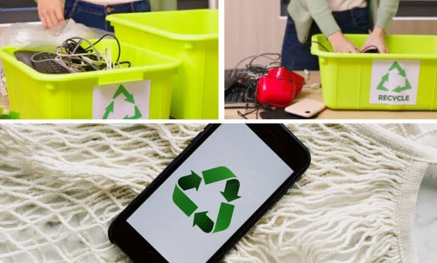

Agotamiento de recursos naturales

La fabricación masiva de dispositivos tecnológicos demanda minerales críticos no renovables. Al no reciclar los RAEE, se desperdician reservas valiosas de metales preciosos, forzando la sobreexplotación minera de la tierra.
Cifras globales de valor económico y pérdida de metales
| Indicador de Recursos | Cifra Registrada | Detalle y Fuente |
|---|---|---|
| Valor anual de metales no recuperados en RAEE | 91 mil millones de dólares | Valor estimado en oro, plata, cobre y hierro que se desecha cada año a nivel mundial sin valorización. (Fuente: UNITAR) |
| Demanda de minerales para transición energética | +300% hacia 2030 | Incremento proyectado en la necesidad de litio, cobalto y níquel para la fabricación de dispositivos y baterías. (Fuente: Agencia Internacional de Energía) |
Nota: La minería urbana representa la alternativa más sostenible para abastecer la industria tecnológica sin degradar nuevos ecosistemas.
Minería Urbana: Haz clic en cada tarjeta
📱
1 Tonelada de Celulares
(Clic para ver)
Contiene hasta 300 gramos de oro, además de plata y paladio de alta pureza.
🔌
Cables y Placas
(Clic para ver)
Permiten recuperar cobre ahorrando hasta un 85% de energía frente a la minería tradicional.
🔋
Baterías
(Clic para ver)
Aportan litio y cobalto indispensables para la fabricación de nuevas baterías.